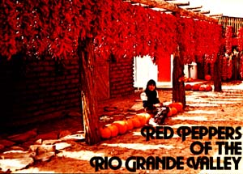

To the tourist visiting the Southwest for the first time, strings of red peppers drying in the sun are a colorful sight. To the fruit and vegetable ranchers whose riverside farms stretch along the valley cut by the Rio Grande between Santa Fe and Taos, New Mexico, the sight is such a familiar one that they seldom give it a second thought. For in this part of the country (and southward), the peppers are planted, grown, and harvested in abundance as a staple food.
In the accompanying photo, Connie Garcia sits amidst the peppers and pumpkins grown by her parents on their ranch near Velarde, New Mexico. Each string of peppers will fetch about ten dollars on the open market ... sometimes more, sometimes less.
While they may taste unbearably "hot" to easterners, the fruit of the pepper plant seldom brings tears to the eyes of native New Mexicans, who-young or old, Indian or AngloSaxon-eat these spicy relatives of the bell pepper as a vegetable, health food, and condiment.
Tourists and native New Mexicans alike agree that the brightly colored peppers-which festoon buildings and Indian pueblos every year at this time-add a welcome touch of color to life in this desert area.
|
 |
|
|